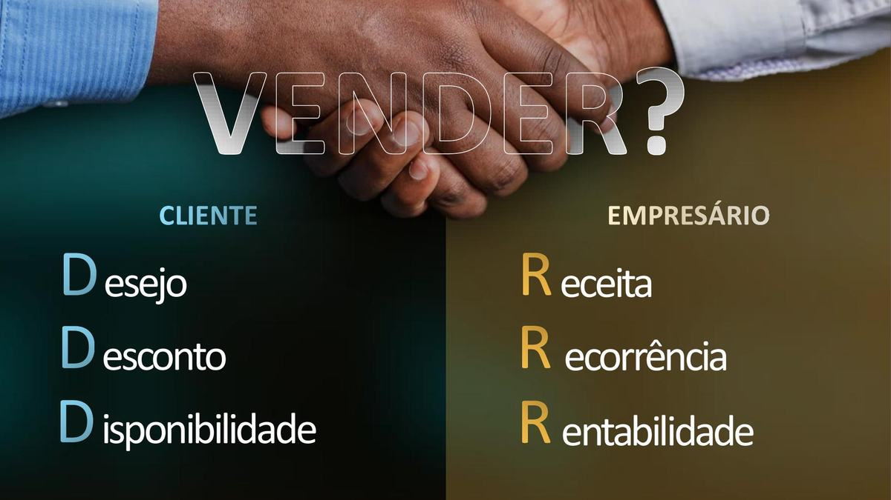

Cinco estratégias para construir venda de forma previsível — sem depender de sorte, de desconto e nem de ter nascido com lábia. Por quem responde pelo número comercial há 20 anos.
É não saber se o mês vai fechar. É essa a dor que quase ninguém nomeia.
A causa é sempre a mesma: você tem esforço, não tem processo. E processo, diferente de talento, se aprende.
Rafael Amorim é Chief Sales Officer da Pará Cabos — o que significa que, nesta semana, ele está decidindo preço, margem e meta de uma operação comercial real.
São mais de 20 anos em liderança comercial, desenvolvimento de negócios e expansão de mercado. O método que você vai aprender não foi lido em livro: é o que ele usa quando a meta é dele.
Não são cinquenta técnicas que você nunca vai lembrar. São cinco movimentos — e cada um só funciona depois que o anterior derrubou uma crença.
Vender é processo e relacionamento. Os 3 D's do cliente — Desejo, Desconto, Disponibilidade — e os 3 R's do empresário: Receita, Recorrência, Rentabilidade. Onde os dois lados se encontram é onde mora a margem.
Você não perde venda por falta de técnica avançada. Perde porque não ligou de volta. Recepcionar, atender, entregar — e como transformar isso em cultura, não em cobrança.
O mercado inteiro aprendeu a vender sentado. Por isso a rua ficou vazia — e barata para quem voltar. Cadência de contato, a visita sem pauta comercial e a rota semanal que cabe na sua agenda.
Quem chega sabendo não precisa perguntar. Como conhecer o cliente de verdade, onde fica a linha que não se atravessa, e o Mapa do Cliente que faz isso funcionar com 50 contas, não só com 5.
Growth não é departamento nem ferramenta — é mentalidade. Os cinco números da sua segunda-feira, o experimento comercial e o diagnóstico de funil que mostra exatamente onde o dinheiro vaza.
O combustível para grandes disputas. Como transformar o que você quer em número — e do número em quantos contatos por semana isso exige. Sonho que vira conta vira meta.
Aula sem tarefa vira entretenimento. Por isso cada módulo vem com ferramenta de trabalho.
De 5 a 16 minutos, uma ideia por vídeo. Você assiste no trânsito de manhã e aplica na visita da tarde. Nada de aula de 40 minutos para parecer que tem conteúdo.
Material para preencher, não para ler. Exercício em toda aula e, no final, um plano escrito com a sua letra.
Mapa do Cliente, rota de visitas, painel dos cinco números, diagnóstico de funil e a conta reversa da ambição — com as fórmulas já montadas.
Semana 1 o básico, semana 2 as visitas, semana 3 o modo espião, semana 4 os dados. No dia 30 você compara com o dia 1 e vê o que mudou.

Acesso imediato. Você assiste à primeira aula em cinco minutos.
Entre, assista a tudo, baixe o caderno, baixe a planilha. Se em 7 dias não fizer sentido para você, peça o reembolso — sem pergunta e sem constrangimento. Devolvo o valor integral.
Dois frameworks que você não encontra em outro lugar: os 3 D's do cliente e os 3 R's do empresário. Eles não são frase de efeito — são ferramentas de diagnóstico que você usa na próxima negociação, hoje. E o método vem de indústria B2B pesada, não de infoproduto.
Foi por causa dessa objeção que o curso foi montado assim: aulas de 5 minutos, uma ideia por vídeo, sem introdução de dez minutos. Você assiste uma no trânsito e aplica na visita da tarde. E, na prática, você não tem tempo justamente porque não tem processo — quem trabalha no improviso gasta o dobro de horas pelo mesmo resultado.
O método nasceu em venda B2B de ciclo longo, com margem apertada e concorrência por preço — o cenário mais difícil que existe. Se funciona ali, tende a funcionar em contextos mais simples. Serve para vendedor de linha de frente, gestor comercial, dono de PME e para quem está começando do zero.
Não. O curso começa pelo fundamento — o que é venda de verdade — antes de qualquer técnica. Justamente por isso a ordem dos módulos não deve ser trocada.
Acesso vitalício, incluindo as atualizações do conteúdo. O material de apoio você baixa e fica com você.
Cartão de crédito, com parcelamento, ou Pix. O pagamento é processado pela Eduzz, em ambiente seguro. No Pix, a liberação costuma ser imediata após a confirmação.
Você tem 7 dias a partir da compra para pedir reembolso integral, sem precisar justificar. Basta responder ao e-mail de confirmação pedindo o cancelamento.
A pergunta é se ela vai ser igual à segunda passada — mesmo cliente, mesmo desconto, mesmo sufoco — ou se você vai começar com um plano escrito.
QUERO COMEÇAR AGORA Acesso imediato · Garantia de 7 dias